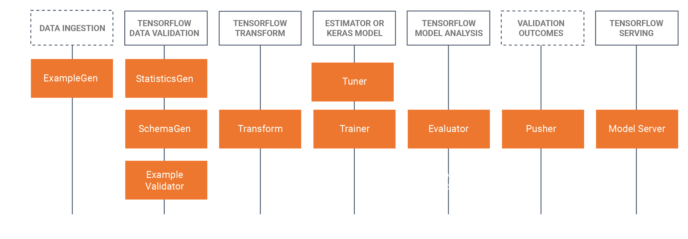
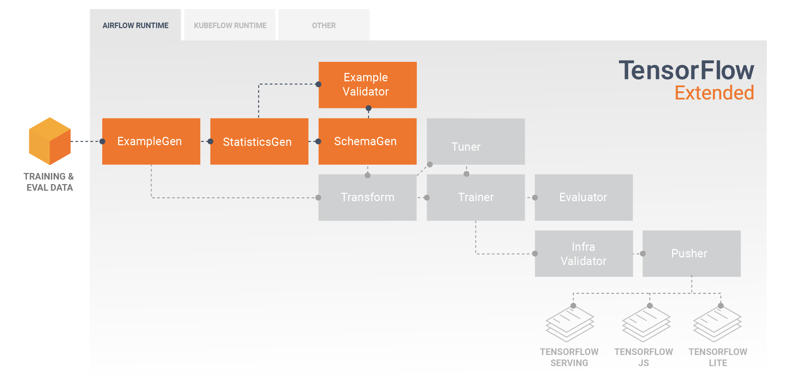
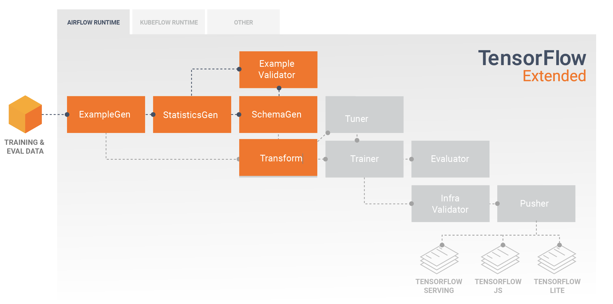
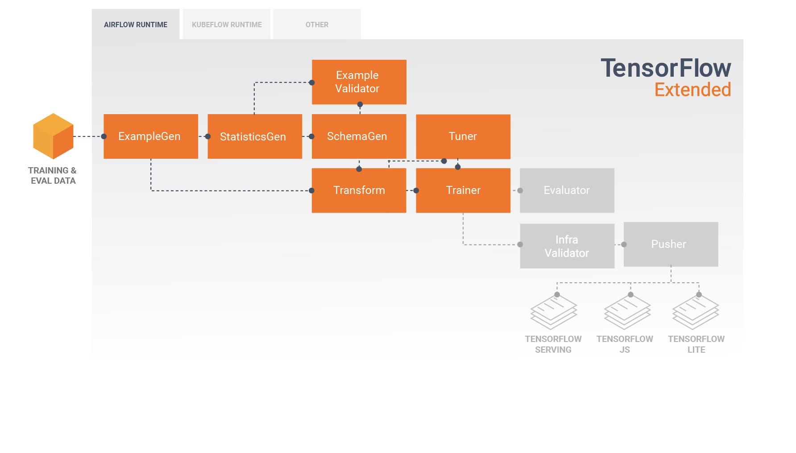
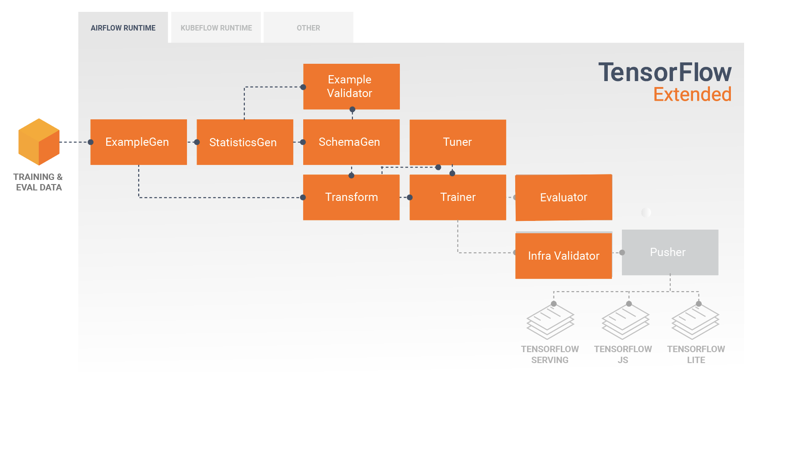

The TFX User Guide¶
Introduction¶
TFX is a Google-production-scale machine learning (ML) platform based on TensorFlow. It provides a configuration framework and shared libraries to integrate common components needed to define, launch, and monitor your machine learning system.
TFX 1.0¶
We are happy to announce the availability of the TFX 1.0.0. This is the initial post-beta release of TFX, which provides stable public APIs and artifacts. You can be assured that your future TFX pipelines will keep working after an upgrade within the compatibility scope defined in this RFC.
Installation¶


Note
See the TensorFlow Serving, TensorFlow JS, and/or TensorFlow Lite documentation for installing those optional components.
Note
This installs Apache Beam with the DirectRunner. You can also separately install runners that perform distributed computation, such as Apache Flink or Apache Spark.
Nightly Packages¶
TFX also hosts nightly packages at https://pypi-nightly.tensorflow.org on Google Cloud. To install the latest nightly package, please use the following command:
This will install the nightly packages for the major dependencies of TFX such as TensorFlow Model Analysis (TFMA), TensorFlow Data Validation (TFDV), TensorFlow Transform (TFT), TFX Basic Shared Libraries (TFX-BSL), ML Metadata (MLMD).
Note
These nightly packages are unstable and breakages are likely to happen. The fix could often take a week or more depending on the complexity involved.
About TFX¶
TFX is a platform for building and managing ML workflows in a production environment. TFX provides the following:
-
A toolkit for building ML pipelines. TFX pipelines let you orchestrate your ML workflow on several platforms, such as: Apache Airflow, Apache Beam, and Kubeflow Pipelines.
-
A set of standard components that you can use as a part of a pipeline, or as a part of your ML training script. TFX standard components provide proven functionality to help you get started building an ML process easily.
-
Libraries which provide the base functionality for many of the standard components. You can use the TFX libraries to add this functionality to your own custom components, or use them separately.
TFX is a Google-production-scale machine learning toolkit based on TensorFlow. It provides a configuration framework and shared libraries to integrate common components needed to define, launch, and monitor your machine learning system.
TFX Standard Components¶
A TFX pipeline is a sequence of components that implement an ML pipeline which is specifically designed for scalable, high-performance machine learning tasks. That includes modeling, training, serving inference, and managing deployments to online, native mobile, and JavaScript targets.
A TFX pipeline typically includes the following components:
-
ExampleGen is the initial input component of a pipeline that ingests and optionally splits the input dataset.
-
StatisticsGen calculates statistics for the dataset.
-
SchemaGen examines the statistics and creates a data schema.
-
ExampleValidator looks for anomalies and missing values in the dataset.
-
Transform performs feature engineering on the dataset.
-
Trainer trains the model.
-
Tuner tunes the hyperparameters of the model.
-
Evaluator performs deep analysis of the training results and helps you validate your exported models, ensuring that they are "good enough" to be pushed to production.
-
InfraValidator checks the model is actually servable from the infrastructure, and prevents bad model from being pushed.
-
Pusher deploys the model on a serving infrastructure.
-
BulkInferrer performs batch processing on a model with unlabelled inference requests.
This diagram illustrates the flow of data between these components:

TFX Libraries¶
TFX includes both libraries and pipeline components. This diagram illustrates the relationships between TFX libraries and pipeline components:

TFX provides several Python packages that are the libraries which are used to create pipeline components. You'll use these libraries to create the components of your pipelines so that your code can focus on the unique aspects of your pipeline.
TFX libraries include:
-
TensorFlow Data Validation (TFDV) is a library for analyzing and validating machine learning data. It is designed to be highly scalable and to work well with TensorFlow and TFX. TFDV includes:
- Scalable calculation of summary statistics of training and test data.
- Integration with a viewer for data distributions and statistics, as well as faceted comparison of pairs of datasets (Facets).
- Automated data-schema generation to describe expectations about data like required values, ranges, and vocabularies.
- A schema viewer to help you inspect the schema.
- Anomaly detection to identify anomalies, such as missing features, out-of- range values, or wrong feature types, to name a few.
- An anomalies viewer so that you can see what features have anomalies and learn more in order to correct them.
-
TensorFlow Transform (TFT) is a library for preprocessing data with TensorFlow. TensorFlow Transform is useful for data that requires a full- pass, such as:
- Normalize an input value by mean and standard deviation.
- Convert strings to integers by generating a vocabulary over all input values.
- Convert floats to integers by assigning them to buckets based on the observed data distribution.
-
TensorFlow is used for training models with TFX. It ingests training data and modeling code and creates a SavedModel result. It also integrates a feature engineering pipeline created by TensorFlow Transform for preprocessing input data.
KerasTuner is used for tuning hyperparameters for model.
Note
TFX supports TensorFlow 1.15 and, with some exceptions, 2.x. For details, see Designing TensorFlow Modeling Code For TFX.
-
TensorFlow Model Analysis (TFMA) is a library for evaluating TensorFlow models. It is used along with TensorFlow to create an EvalSavedModel, which becomes the basis for its analysis. It allows users to evaluate their models on large amounts of data in a distributed manner, using the same metrics defined in their trainer. These metrics can be computed over different slices of data and visualized in Jupyter notebooks.
-
TensorFlow Metadata (TFMD) provides standard representations for metadata that are useful when training machine learning models with TensorFlow. The metadata may be produced by hand or automatically during input data analysis, and may be consumed for data validation, exploration, and transformation. The metadata serialization formats include:
- A schema describing tabular data (e.g., tf.Examples).
- A collection of summary statistics over such datasets.
-
ML Metadata (MLMD) is a library for recording and retrieving metadata associated with ML developer and data scientist workflows. Most often the metadata uses TFMD representations. MLMD manages persistence using SQL-Lite, MySQL, and other similar data stores.
Supporting Technologies¶
Required¶
- Apache Beam is an open source, unified model for defining both batch and streaming data-parallel processing pipelines. TFX uses Apache Beam to implement data-parallel pipelines. The pipeline is then executed by one of Beam's supported distributed processing back-ends, which include Apache Flink, Apache Spark, Google Cloud Dataflow, and others.
Optional¶
Orchestrators such as Apache Airflow and Kubeflow make configuring, operating, monitoring, and maintaining an ML pipeline easier.
-
Apache Airflow is a platform to programmatically author, schedule and monitor workflows. TFX uses Airflow to author workflows as directed acyclic graphs (DAGs) of tasks. The Airflow scheduler executes tasks on an array of workers while following the specified dependencies. Rich command line utilities make performing complex surgeries on DAGs a snap. The rich user interface makes it easy to visualize pipelines running in production, monitor progress, and troubleshoot issues when needed. When workflows are defined as code, they become more maintainable, versionable, testable, and collaborative.
-
Kubeflow is dedicated to making deployments of machine learning (ML) workflows on Kubernetes simple, portable and scalable. Kubeflow's goal is not to recreate other services, but to provide a straightforward way to deploy best-of-breed open-source systems for ML to diverse infrastructures. Kubeflow Pipelines enable composition and execution of reproducible workflows on Kubeflow, integrated with experimentation and notebook based experiences. Kubeflow Pipelines services on Kubernetes include the hosted Metadata store, container based orchestration engine, notebook server, and UI to help users develop, run, and manage complex ML pipelines at scale. The Kubeflow Pipelines SDK allows for creation and sharing of components and composition of pipelines programmatically.
Portability and Interoperability¶
TFX is designed to be portable to multiple environments and orchestration frameworks, including Apache Airflow, Apache Beam and Kubeflow . It is also portable to different computing platforms, including on-premise, and cloud platforms such as the Google Cloud Platform (GCP). In particular, TFX interoperates with several managed GCP services, such as Cloud AI Platform for Training and Prediction, and Cloud Dataflow for distributed data processing for several other aspects of the ML lifecycle.
Note
The current revision of this user guide primarily discusses deployment on a bare-metal system using Apache Airflow for orchestration.
Model vs. SavedModel¶
Model¶
A model is the output of the training process. It is the serialized record of the weights that have been learned during the training process. These weights can be subsequently used to compute predictions for new input examples. For TFX and TensorFlow, 'model' refers to the checkpoints containing the weights learned up to that point.
Note that 'model' might also refer to the definition of the TensorFlow computation graph (i.e. a Python file) that expresses how a prediction will be computed. The two senses may be used interchangeably based on context.
SavedModel¶
- What is a SavedModel: a universal, language-neutral, hermetic, recoverable serialization of a TensorFlow model.
- Why is it important: It enables higher-level systems to produce, transform, and consume TensorFlow models using a single abstraction.
SavedModel is the recommended serialization format for serving a TensorFlow model in production, or exporting a trained model for a native mobile or JavaScript application. For example, to turn a model into a REST service for making predictions, you can serialize the model as a SavedModel and serve it using TensorFlow Serving. See Serving a TensorFlow Model for more information.
Schema¶
Some TFX components use a description of your input data called a schema. The schema is an instance of schema.proto. Schemas are a type of protocol buffer, more generally known as a "protobuf". The schema can specify data types for feature values, whether a feature has to be present in all examples, allowed value ranges, and other properties. One of the benefits of using TensorFlow Data Validation (TFDV) is that it will automatically generate a schema by inferring types, categories, and ranges from the training data.
Here's an excerpt from a schema protobuf:
...
feature {
name: "age"
value_count {
min: 1
max: 1
}
type: FLOAT
presence {
min_fraction: 1
min_count: 1
}
}
feature {
name: "capital-gain"
value_count {
min: 1
max: 1
}
type: FLOAT
presence {
min_fraction: 1
min_count: 1
}
}
...
The following components use the schema:
- TensorFlow Data Validation
- TensorFlow Transform
In a typical TFX pipeline TensorFlow Data Validation generates a schema, which is consumed by the other components.
Note
The auto-generated schema is best-effort and only tries to infer basic properties of the data. It is expected that developers review and modify it as needed.
Developing with TFX¶
TFX provides a powerful platform for every phase of a machine learning project, from research, experimentation, and development on your local machine, through deployment. In order to avoid code duplication and eliminate the potential for training/serving skew it is strongly recommended to implement your TFX pipeline for both model training and deployment of trained models, and use Transform components which leverage the TensorFlow Transform library for both training and inference. By doing so you will use the same preprocessing and analysis code consistently, and avoid differences between data used for training and data fed to your trained models in production, as well as benefitting from writing that code once.
Data Exploration, Visualization, and Cleaning¶

TFX pipelines typically begin with an ExampleGen component, which accepts input data and formats it as tf.Examples. Often this is done after the data has been split into training and evaluation datasets so that there are actually two copies of ExampleGen components, one each for training and evaluation. This is typically followed by a StatisticsGen component and a SchemaGen component, which will examine your data and infer a data schema and statistics. The schema and statistics will be consumed by an ExampleValidator component, which will look for anomalies, missing values, and incorrect data types in your data. All of these components leverage the capabilities of the TensorFlow Data Validation library.
TensorFlow Data Validation (TFDV) is a valuable tool when doing initial exploration, visualization, and cleaning of your dataset. TFDV examines your data and infers the data types, categories, and ranges, and then automatically helps identify anomalies and missing values. It also provides visualization tools that can help you examine and understand your dataset. After your pipeline completes you can read metadata from MLMD and use the visualization tools of TFDV in a Jupyter notebook to analyze your data.
Following your initial model training and deployment, TFDV can be used to monitor new data from inference requests to your deployed models, and look for anomalies and/or drift. This is especially useful for time series data that changes over time as a result of trend or seasonality, and can help inform when there are data problems or when models need to be retrained on new data.
Data Visualization¶
After you have completed your first run of your data through the section of your pipeline that uses TFDV (typically StatisticsGen, SchemaGen, and ExampleValidator) you can visualize the results in a Jupyter style notebook. For additional runs you can compare these results as you make adjustments, until your data is optimal for your model and application.
You will first query ML Metadata (MLMD) to locate the results of these executions of these components, and then use the visualization support API in TFDV to create the visualizations in your notebook. This includes tfdv.load_statistics() and tfdv.visualize_statistics() Using this visualization you can better understand the characteristics of your dataset, and if necessary modify as required.
Developing and Training Models¶

A typical TFX pipeline will include a Transform component, which will perform feature engineering by leveraging the capabilities of the TensorFlow Transform (TFT) library. A Transform component consumes the schema created by a SchemaGen component, and applies data transformations to create, combine, and transform the features that will be used to train your model. Cleanup of missing values and conversion of types should also be done in the Transform component if there is ever a possibility that these will also be present in data sent for inference requests. There are some important considerations when designing TensorFlow code for training in TFX.

The result of a Transform component is a SavedModel which will be imported and used in your modeling code in TensorFlow, during a Trainer component. This SavedModel includes all of the data engineering transformations that were created in the Transform component, so that the identical transforms are performed using the exact same code during both training and inference. Using the modeling code, including the SavedModel from the Transform component, you can consume your training and evaluation data and train your model.
An optional Tuner component can be added before Trainer to tune the hyperparameters (e.g., number of layers) for the model. With the given model and hyperparameters' search space, tuning algorithm will find the best hyperparameters based on the objective.
Analyzing and Understanding Model Performance¶

Following initial model development and training it's important to analyze and
really understand your model's performance. A typical TFX pipeline will include
an Evaluator component, which leverages the capabilities of the
TensorFlow Model Analysis (TFMA) library, which provides a power
toolset for this phase of development. An Evaluator component consumes the
model that you exported above, and allows you to specify a list of
tfma.SlicingSpec
that you can use when visualizing and analyzing your model's performance. Each
SlicingSpec defines a slice of your training data that you want to examine,
such as particular categories for categorical features, or particular ranges for
numerical features.
For example, this would be important for trying to understand your model's performance for different segments of your customers, which could be segmented by annual purchases, geographical data, age group, or gender. This can be especially important for datasets with long tails, where the performance of a dominant group may mask unacceptable performance for important, yet smaller groups. For example, your model may perform well for average employees but fail miserably for executive staff, and it might be important to you to know that.
Model Analysis and Visualization¶
After you have completed your first run of your data through training your model and running the Evaluator component (which leverages TFMA) on the training results, you can visualize the results in a Jupyter style notebook. For additional runs you can compare these results as you make adjustments, until your results are optimal for your model and application.
You will first query ML Metadata (MLMD) to locate the results of these executions of these components, and then use the visualization support API in TFMA to create the visualizations in your notebook. This includes tfma.load_eval_results and tfma.view.render_slicing_metrics Using this visualization you can better understand the characteristics of your model, and if necessary modify as required.
Validating Model Performance¶
As part of analyzing a model's performance you might want to validate the performance against a baseline (such as the currently serving model). Model validation is performed by passing both a candidate and baseline model to the Evaluator component. The Evaluator computes metrics (e.g. AUC, loss) for both the candidate and baseline along with a corresponding set of diff metrics. Thresholds may then be applied and used to gate pushing your models to production.
Validating That A Model Can Be Served¶

Before deploying the trained model, you might want to validate whether the model is really servable in the serving infrastructure. This is especially important in production environments to ensure that the newly published model does not prevent the system from serving predictions. The InfraValidator component will make a canary deployment of your model in a sandboxed environment, and optionally send real requests to check that your model works correctly.
Deployment Targets¶
Once you have developed and trained a model that you're happy with, it's now time to deploy it to one or more deployment target(s) where it will receive inference requests. TFX supports deployment to three classes of deployment targets. Trained models which have been exported as SavedModels can be deployed to any or all of these deployment targets.
Inference: TensorFlow Serving¶
TensorFlow Serving (TFS) is a flexible, high-performance serving system for machine learning models, designed for production environments. It consumes a SavedModel and will accept inference requests over either REST or gRPC interfaces. It runs as a set of processes on one or more network servers, using one of several advanced architectures to handle synchronization and distributed computation. See the TFS documentation for more information on developing and deploying TFS solutions.
In a typical pipeline, a SavedModel which has been trained in a Trainer component would first be infra-validated in an InfraValidator component. InfraValidator launches a canary TFS model server to actually serve the SavedModel. If validation has passed, a Pusher component will finally deploy the SavedModel to your TFS infrastructure. This includes handling multiple versions and model updates.
Inference in Native Mobile and IoT Applications: TensorFlow Lite¶
TensorFlow Lite is a suite of tools which is dedicated to help developers use their trained TensorFlow Models in native mobile and IoT applications. It consumes the same SavedModels as TensorFlow Serving, and applies optimizations such as quantization and pruning to optimize the size and performance of the resulting models for the challenges of running on mobile and IoT devices. See the TensorFlow Lite documentation for more information on using TensorFlow Lite.
Inference in JavaScript: TensorFlow JS¶
TensorFlow JS is a JavaScript library for training and deploying ML models in the browser and on Node.js. It consumes the same SavedModels as TensorFlow Serving and TensorFlow Lite, and converts them to the TensorFlow.js Web format. See the TensorFlow JS documentation for more details on using TensorFlow JS.
Creating a TFX Pipeline With Airflow¶
Check airflow workshop for details
Creating a TFX Pipeline With Kubeflow¶
Setup¶
Kubeflow requires a Kubernetes cluster to run the pipelines at scale. See the Kubeflow deployment guideline that guide through the options for deploying the Kubeflow cluster.
Configure and run TFX pipeline¶
Please follow the TFX on Cloud AI Platform Pipeline tutorial to run the TFX example pipeline on Kubeflow. TFX components have been containerized to compose the Kubeflow pipeline and the sample illustrates the ability to configure the pipeline to read large public dataset and execute training and data processing steps at scale in the cloud.
Command line interface for pipeline actions¶
TFX provides a unified CLI which helps the perform full range of pipeline actions such as create, update, run, list, and delete pipelines on various orchestrators including Apache Airflow, Apache Beam, and Kubeflow. For details, please follow these instructions.